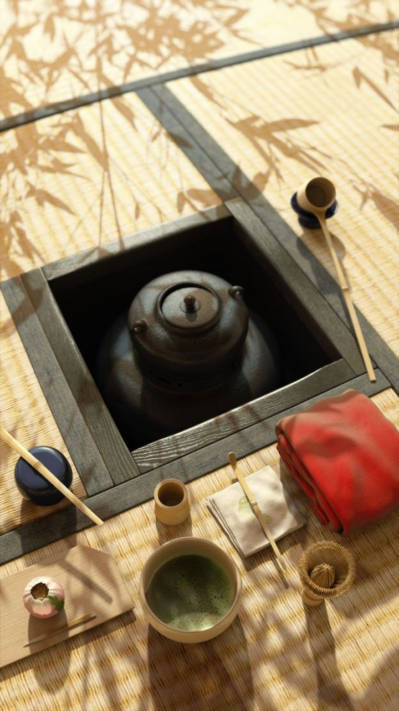
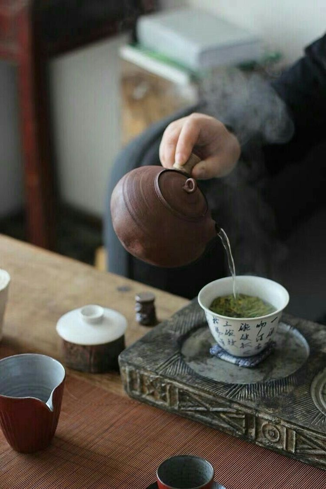
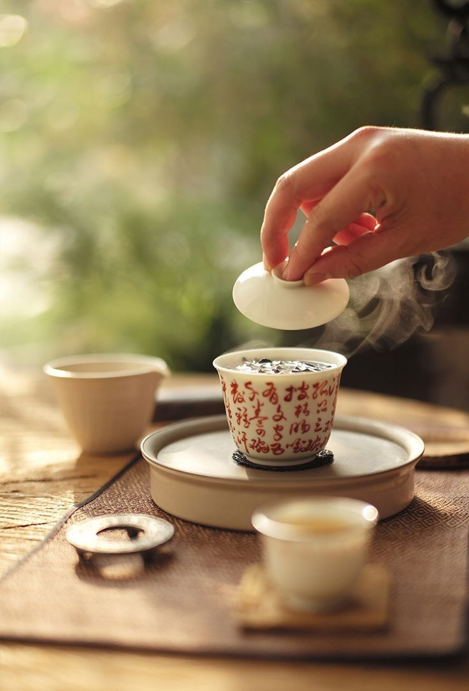

Китайська чайна церемонія
Вважається, що саме в Піднебесній зародилась традиція проведення чайних церемоній. Тут вона називається Гунфу-ча і покликана розкрити аромат і смак цієї дивовижної рослини. Мир та спокій – обов’язкові умови проведення гуну-ча. Найважливішим моментом — є правильно вибрана вода. Вона повинна бут мякою, тому найкраще підходить джерельна.
Послідовність дій у традиційній церемонії:
-
Крок 1)
Підготовують усі потрібні прибори для чаю, а чайний столик прикрашають статуеткою божка. Пара чайних чашок називається чадуй, а чайник – чаху.
-
Крок 2)
Закип’ятити воду. Вона вважається готовою лише тоді, коли на поверхні появляються великі бульбашки.
-
Крок 3)
Потрібно прогріти весь посуд.
 -
Крок 4
Чай, який обрали для церемонії насипають в спеціальну коробочку – чахе. Потім всі вдихають і насолоджуються його ароматом.
-
Крок 5)
В чайник засипають сухий чай.
-
Крок 6)
Процес пробудження чаю. Чайник накривають кришкою та замотують в рушничок, збовтують та розгойдують чайник з боку в бік.

-
Крок 7)
У чайник наливають гарячу воду. Першу заварку не п’ють, вона використовується лише для омивання чайного листя від можливого бруду.
-
Крок 8)
Слід підготувати дві чашки: високу (венсябей) – яку заповнюють на 3/4 об’єму чаєм та накривають низькою чашкою (чабей).
-
Крок 9)
Потім чашки перевертають, і спершу перш ніж скуштувати напій гості насолоджуються його ароматом.

-
Крок 10)
Коли першу порцію чаю вип’ють, процес повторюється знову. В середньому чай заварюють від трьох до п’яти разів.
Чай це не просто напій, і церемонія його приготування – не просто мистецтво, а процес єднання душ. Чайна церемонія дарує спокій і щастя.